import matplotlib.pyplot as plt15 Matplotlib
(CSE331) Python for Data Science
1 Introduction
Matplotlib is the foundational data visualization library in Python.
Most high-level visualization libraries rely on Matplotlib internally, including:
- Seaborn
- Pandas
.plot()
- Statsmodels plotting utilities
Therefore, learning Matplotlib is essential for gaining full and explicit control over graphical output.
Matplotlib offers:
- Extremely high flexibility
- Fine-grained control over every visual component
- Support for almost all standard and advanced chart types
Students familiar with ggplot2 often find Matplotlib more verbose.
This is because Matplotlib follows a step-by-step, imperative approach, rather than the declarative grammar of graphics philosophy.
The conventional import is:
2 A First Look: The Pyplot Style
Matplotlib can operate in a stateful mode, where commands modify a current active figure.
import matplotlib.pyplot as plt
x = [1, 2, 3, 4, 5]
y = [1, 4, 6, 8, 4]
plt.plot(x, y)
plt.show()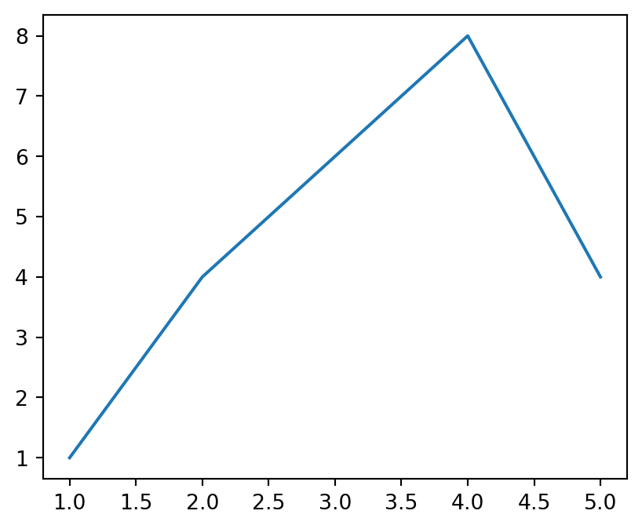
Here, functions such as plt.plot(), plt.title(), and plt.xlabel() all act on the same implicit figure.
This approach is convenient for quick exploration, but becomes difficult to manage as plots grow more complex.
3 Two Matplotlib APIs
Matplotlib provides two distinct interfaces:
Pyplot API (stateful)
- Works on the “current plot”
- Suitable for quick checks and demonstrations
Object-Oriented (OO) API (recommended)
- Explicit control over figures and axes
- Preferred for professional, academic, and reproducible work
From this point onward, we focus on the Object-Oriented API.
4 Object-Oriented API: The Core Idea
In the OO approach, plotting always begins by explicitly creating:
- a Figure (entire canvas)
- one or more Axes (actual plotting regions)
This is done using plt.subplots().
fig, ax = plt.subplots()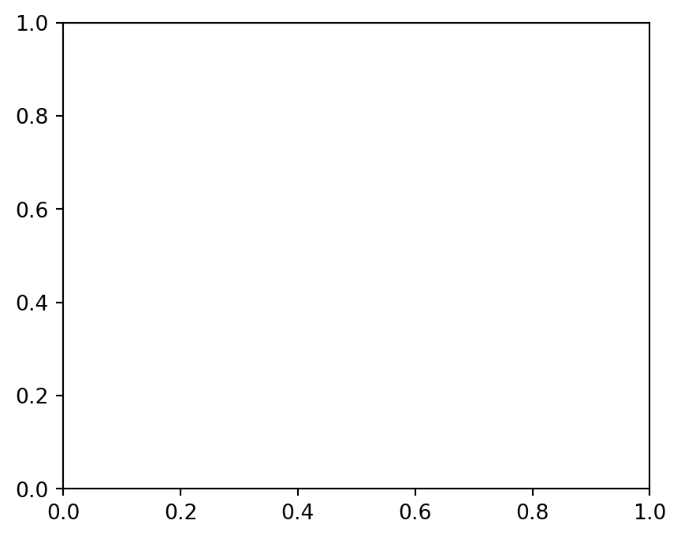
The function returns two objects:
fig: the Figure, controlling size and overall layoutax: an Axes, where data are plotted
Think of it as:
- Figure → the page
- Axes → a plot region on that page
All plotting commands are applied to the Axes object.
5 A Basic Line Plot
We begin with the simplest possible example.
x = [1, 2, 3, 4, 5]
y = [2, 3, 1, 4, 5]
fig, ax = plt.subplots()
ax.plot(x, y)
plt.show()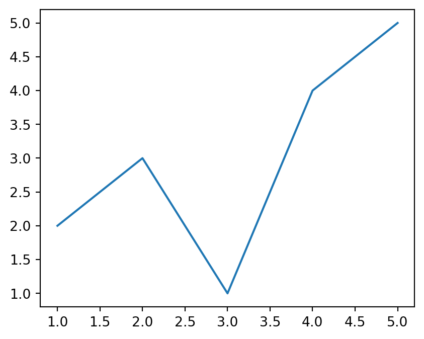
Key points:
ax.plot()draws the dataplt.show()renders the figure and is always the final step
6 Changing the Plot Type
To change the chart type, we change only the method, not the structure.
fig, ax = plt.subplots()
ax.scatter(x, y)
plt.show()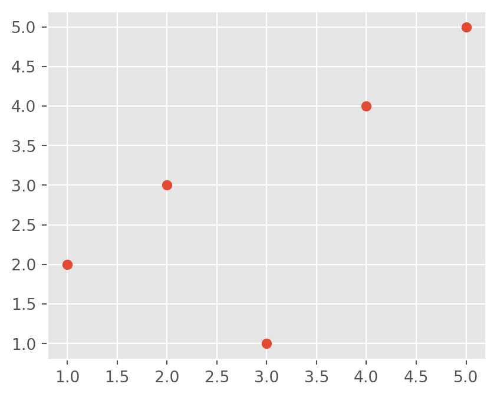
The structure remains identical. Only the plotting method changes.
Explicit argument naming is often clearer:
ax.scatter(x=x, y=y, color="red")7 Working with a Real Dataset
Now we move from toy data to a small dataset, and create a horizontal bar plot.
import pandas as pd
import matplotlib.pyplot as plt
df = pd.DataFrame({
"Group": ["A", "B", "C", "D", "E"],
"Value": [1, 5, 4, 3, 9]
})
fig, ax = plt.subplots()
fig.set_size_inches(6, 4)
ax.barh(df.Group, df.Value)
plt.show()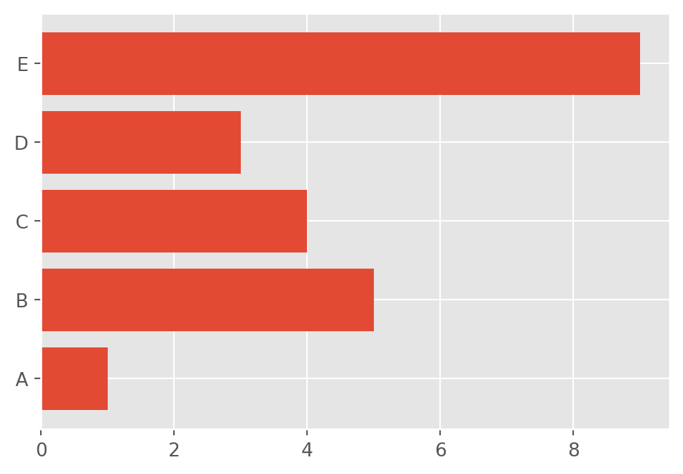
Notice the clear division of roles:
figcontrols sizeaxcontrols data and annotations
8 Customizing Appearance
Matplotlib allows precise control over visual elements.
fig, ax = plt.subplots(figsize=(6, 4))
ax.plot(x, y, marker="o", linewidth=2)
ax.set_title("Customized Line Plot")
ax.set_xlabel("X-axis")
ax.set_ylabel("Y-axis")
plt.show()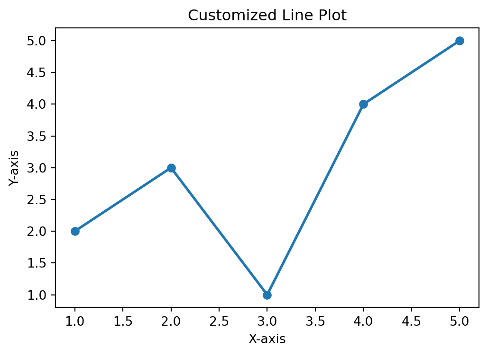
Customization is performed entirely through ax methods.
9 Multiple Panels (Subplots)
This is where the OO interface becomes indispensable.
x = np.linspace(0, 10, 50)
fig, axes = plt.subplots(1, 2, figsize=(8, 3))
axes[0].plot(x, np.sin(x))
axes[0].set_title("Sine Wave")
axes[1].plot(x, np.cos(x))
axes[1].set_title("Cosine Wave")
plt.tight_layout()
plt.show()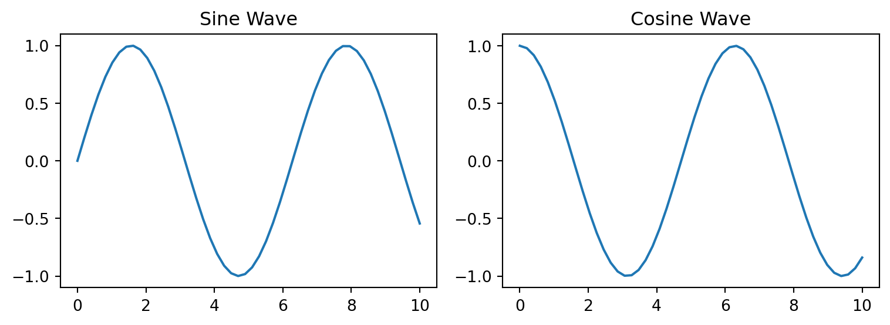
Each element of axes is a separate Axes object, controlled independently.
10 Styles in Matplotlib
Matplotlib includes predefined style sheets.
plt.style.use("ggplot") # OptionalStyles can improve appearance quickly, but for academic work, explicit control is preferred.
Available styles:
plt.style.available11 Saving Figures
fig, ax = plt.subplots()
ax.plot([1, 2, 3], [1, 4, 9])
fig.savefig("plot.png", dpi=300, bbox_inches="tight")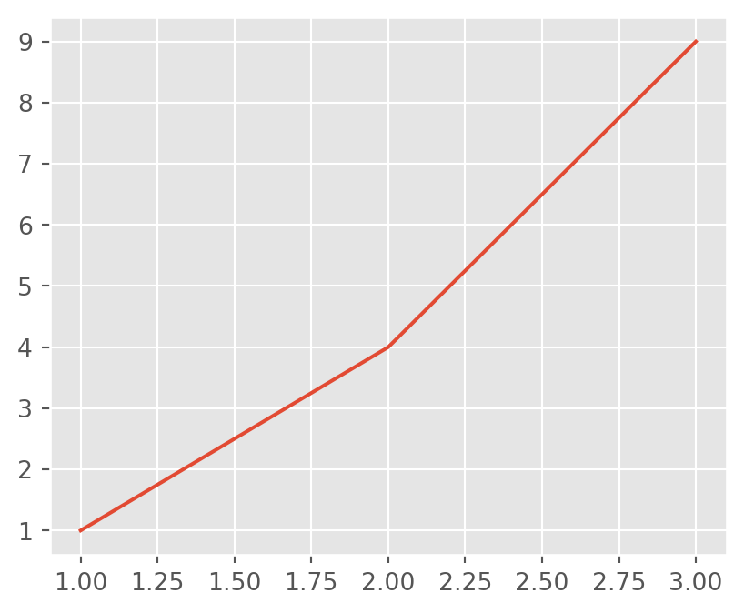
dpisets resolutionbbox_inches="tight"removes extra margins
12 Quick Examples
12.1 Histogram
fig, ax = plt.subplots()
ax.hist(np.random.randn(200), bins=20)
plt.show()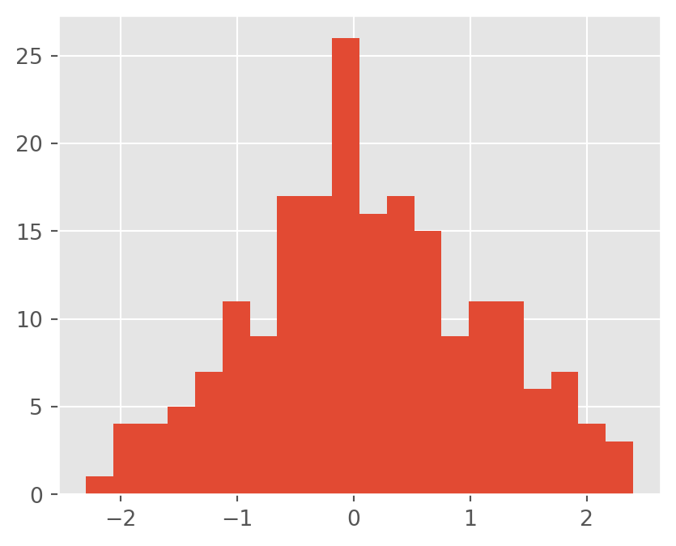
12.2 Boxplot
fig, ax = plt.subplots()
ax.boxplot([np.random.randn(100), np.random.randn(100) + 1])
plt.show()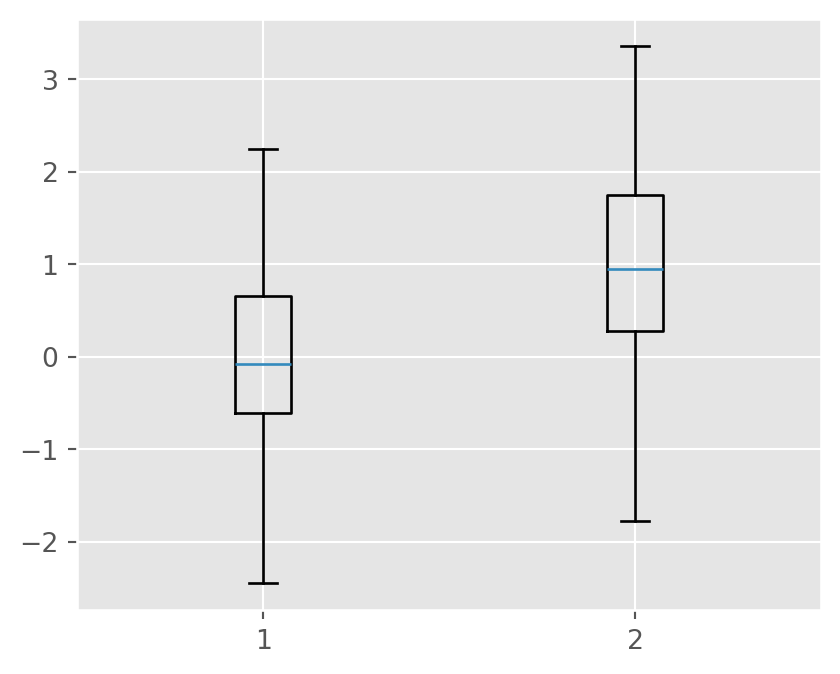
12.3 Bar Plot
df = pd.DataFrame({
"Group": ["A", "B", "C", "D", "E"],
"Value": [1, 5, 4, 3, 9]
})
fig, ax = plt.subplots()
ax.bar(df.Group, df.Value)
plt.show()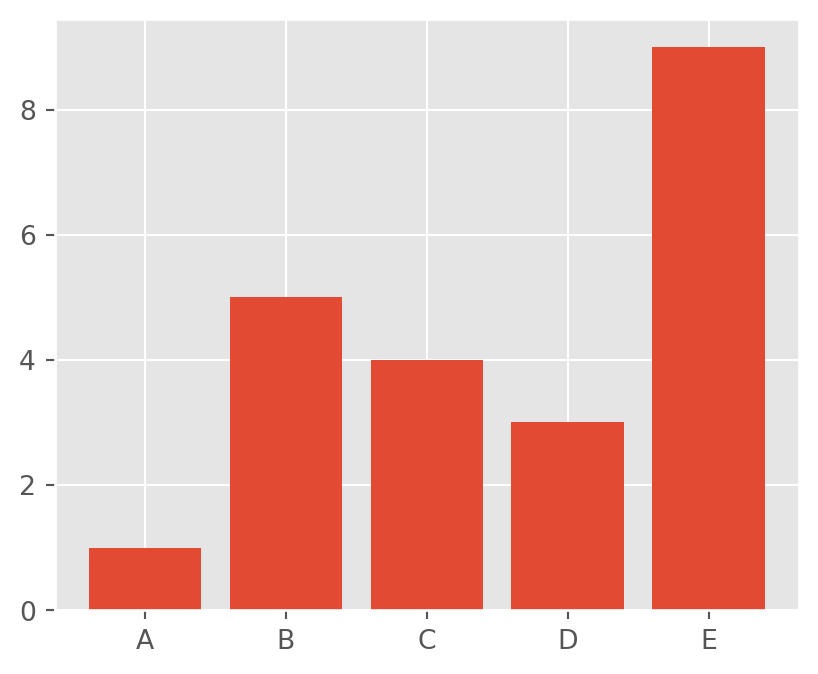
12.4 Pie Chart
fig, ax = plt.subplots()
ax.pie(df.Value, labels=df.Group, autopct="%1.1f%%")
plt.show()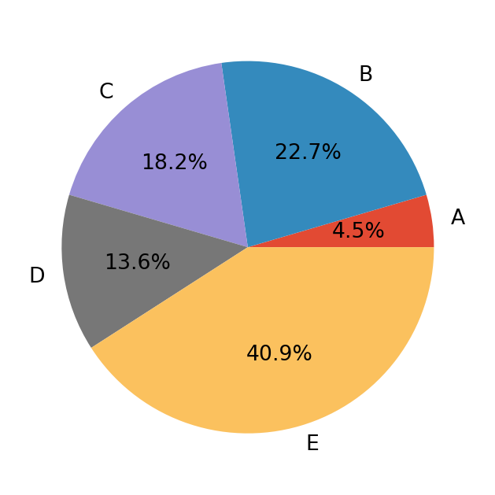
13 Summary
- Matplotlib is the core visualization engine of Python
- Two APIs exist, but the Object-Oriented API is preferred
- A consistent pattern is used:
- Create
fig, ax - Plot using
ax - Customize
- Show or save
- Create
This structure scales naturally from simple plots to publication-quality multi-panel figures.
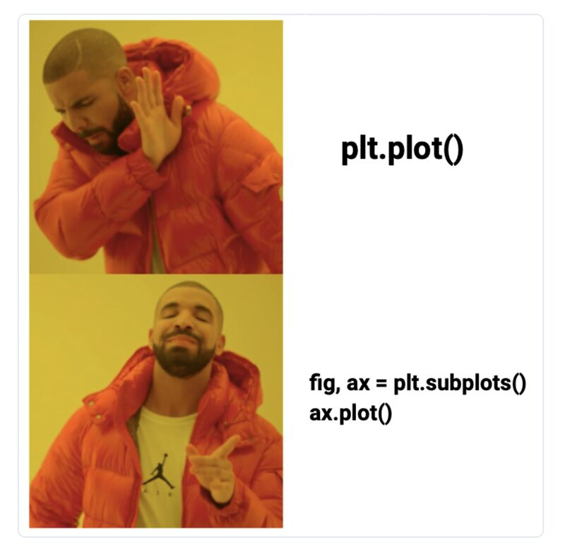